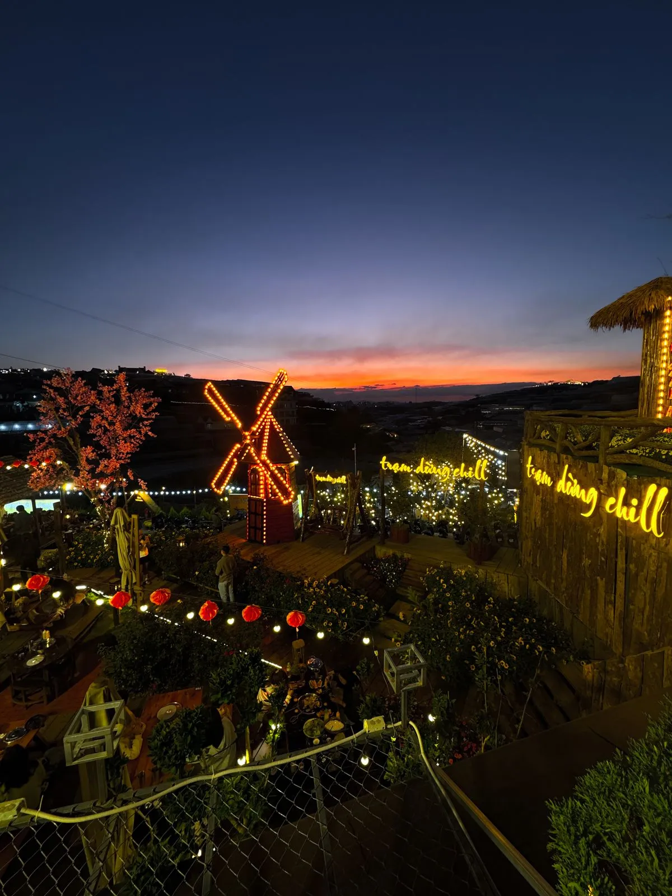

Tại sao phải đặt bàn trước?
Đà Lạt là điểm đến du lịch hàng đầu Việt Nam, đặc biệt cuối tuần lượng du khách tăng gấp 3-4 lần. Các quán nướng Đà Lạt view đẹp thường full bàn từ 17h chiều thứ 6 đến hết chủ nhật. Nếu không đặt trước, bạn có thể phải chờ 1-2 tiếng hoặc... đi quán khác.
5 quán nướng nên đặt trước
1. Trạm Dừng Chill: Đặt qua form online hoặc Zalo — xác nhận trong 15 phút. Cuối tuần nên đặt trước 1-2 ngày.
2. BBQ Garden: Gọi điện đặt, thường hết chỗ sáng thứ 7.
3. Nướng Hồ Tuyền Lâm: Đặt qua Facebook, nên đặt trước 2-3 ngày.
4. Đồi Nướng BBQ: Walk-in được ngày thường, cuối tuần nên đặt trước.
5. Sunset BBQ: Đặt qua app, có hệ thống quản lý bàn tự động.
Cách đặt bàn nhanh nhất
Zalo/Hotline: Nhanh nhất, xác nhận tức thì. Form online: Tiện lợi, đặt bất kỳ lúc nào. Facebook/Instagram: Nhắn tin đặt, thường reply trong 30 phút. Tại Trạm Dừng Chill, bạn có thể đặt bàn online và nhận xác nhận qua Zalo chỉ trong 15 phút.

Mẹo đặt bàn vị trí đẹp
Đặt sớm 2-3 ngày trước và ghi rõ yêu cầu: "muốn ngồi view hoàng hôn" hoặc "view xe lửa". Đến đúng giờ hẹn — quán chỉ giữ bàn 15-30 phút. Nếu có dịp đặc biệt (sinh nhật, kỷ niệm), báo trước để nhà hàng setup bàn đẹp.
Kết luận
Đừng để hết chỗ làm hỏng chuyến đi Đà Lạt! Đặt bàn quán nướng trước là bước đầu tiên để có trải nghiệm tuyệt vời. Đặt bàn Trạm Dừng Chill ngay →